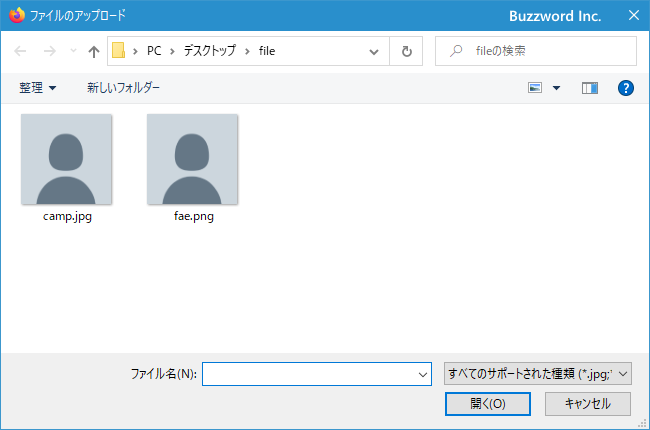
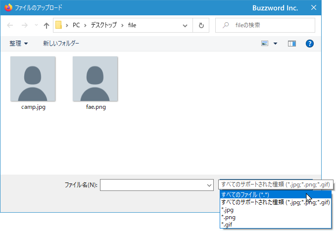
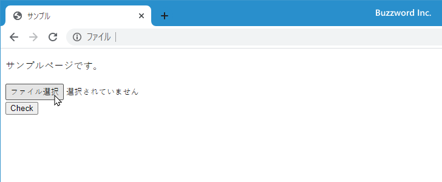
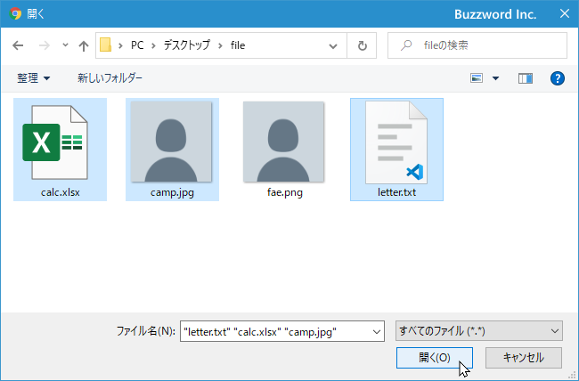
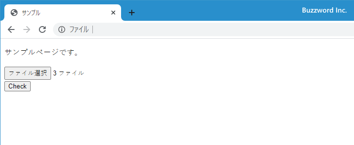
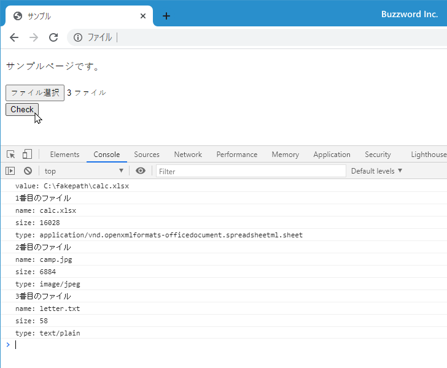
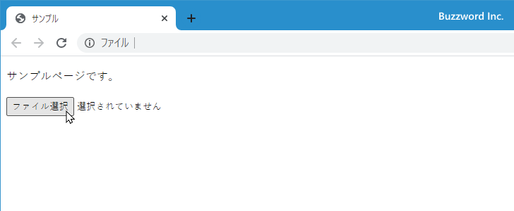
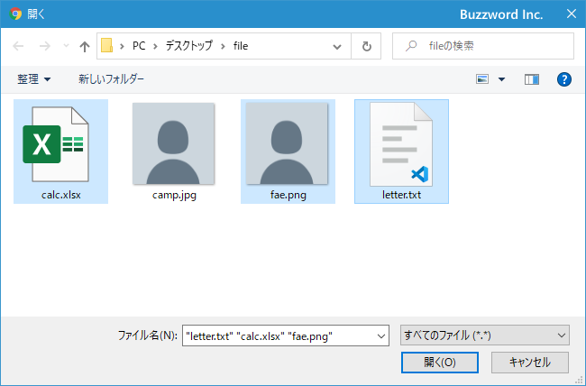
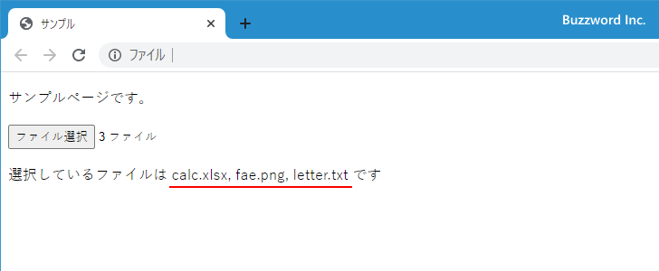

ファイル選択ダイアログで選択したファイルの情報をJavaScriptを使って取得・設定する
ファイル選択ダイアログを使って選択したファイルの情報を JavaScript から取得したり設定したりする方法について解説します。ファイル選択ダイアログでは一つまたは複数のファイルを選択することができます。ファイル選択ダイアログを表示するには input 要素で type 属性に file を指定します。
HTMLでファイル選択ダイアログを作成する
HTML でファイル選択ダイアログを表示するには input 要素で type 属性に file を指定します。
<input type="file">
ご利用の環境によってどのように表示されるのかは異なりますが、 Firefox / Wndows10 の場合は「参照...」ボタンをクリックすると次のようにファイルを選択するダイアログが表示されます。
複数のファイルを一度に選択できるようにするには multiple 属性を設定します。
<input type="file" multiple>
ファイル選択ダイアログを表示したときに一覧に表示されるファイル形式を限定するには accept 属性にファイルの拡張子を指定します。例えば ".jpg" や ".txt" です。複数指定する場合はカンマ(,)で区切り ".jpg, .txt" のように指定します。
<input type="file" accept=".jpg, .png, .gif">
accept 属性を設定した場合に「参照...」ボタンをクリックすると、ファイル選択ダイアログにはデフォルトで accept 属性で指定したファイル形式だけが表示されます。

ただ利用者がファイル選択ダイアログで表示するファイル形式を「すべてのファイル(*.*)」に変更すればすべてのファイルが表示されどんなファイルでも選択できます。ファイルの形式の制限を行えるわけではないので、必要であればファイルを選択したあとでチェックが必要です。

ファイル選択ダイアログで選択したファイル名やファイル情報の取得
ファイル選択ダイアログで選択したファイルの名前を取得するには input 要素を表す HTMLInputElement オブジェクトの value プロパティの値を参照します。書式は次のとおりです。
element.value
例えば id 属性の値が myfile のファイル選択ダイアログで選択されているファイルの名前を取得するには次のように記述します。
let element = document.getElementById('myfile');
console.log(element.value);
ファイルが選択されていないときに value プロパティを参照すると空文字を取得します。また複数のファイルを選択できるようにしている場合に、複数のファイルを選択した状態で value プロパティを参照すると最初のファイル名を取得できます。
なお value プロパティを参照して取得したファイル名は次のように「C:\fakepath\ファイル名」という形式になり実際にファイルが存在するパスとは異なります。これはセキュリティ上の理由によるものです。
C:\fakepath\ファイル名
また同じくセキュリティ上の理由により value プロパティに対して JavaScript のコードから値を設定することはできません。
複数選択されているファイルを順に取得する
ファイル名だけではなくファイルの最終更新日やファイルサイズ、ファイルの MIME タイプを取得したい場合は files プロパティの値を参照します。書式は次のとおりです。
element.files
参照できる値は FileList オブジェクトで、選択されているファイルを表す File オブジェクトの配列です。インデックスを指定することで選択されている複数のファイルを順に参照することができます。
例えば選択されているファイルの名前をすべてコンソールに出力するには次のように実行します。
let element = document.getElementById('myfile');
let files = element.files;
for(let i = 0 ; i < files.length ; i++){
console.log(files[i].name);
}
なお取り出した File オブジェクトで参照可能なプロパティには次のようなものがあります。
File.lastModifiedDate ファイルの最終更新時刻の Date を返します File.name ファイル名 File.size ファイルサイズ(単位はバイト) File.type ファイルの MIME タイプ
次のサンプルを見てください。
<!DOCTYPE html>
<html lang="ja">
<head>
<meta charset="UTF-8">
<title>サンプル</title>
</head>
<body>
<p>サンプルページです。</p>
<div>
<input type="file" id="fileBox" multiple >
</div>
<div>
<input type="button" value="Check" id="checkButton">
</div>
<script>
function butotnClick(){
console.log('value: ' + fileBox.value);
let files = fileBox.files;
for(let i = 0 ; i < files.length ; i++){
console.log((i + 1) + '番目のファイル');
console.log('name: ' + files[i].name);
console.log('size: ' + files[i].size);
console.log('type: ' + files[i].type);
}
}
let fileBox = document.getElementById('fileBox');
let checkButton = document.getElementById('checkButton');
checkButton.addEventListener('click', butotnClick);
</script>
</body>
</html>
「ファイル選択」をクリックするとファイル選択ダイアログが表示されてファイルを選択することができます。



ボタンをクリックすると選択したファイルの情報がコンソールに出力されます。

ファイル選択ダイアログのイベント処理
ファイル選択ダイアログでは新しいファイルを選択すると change イベントが発生します。change イベントを利用する場合は次のように記述します。
<input type="file" id="myfile">
<script>
function inputChange(){
// イベントが発生した時の処理
}
let myfile = document.getElementById('myfile');
element.addEventListener('change', inputChange);
</script>
change イベントの詳しい使い方については「changeイベント：フォームや選択メニューが変更されたとき」を参照されてください。
次のサンプルを見てください。
<!DOCTYPE html>
<html lang="ja">
<head>
<meta charset="UTF-8">
<title>サンプル</title>
</head>
<body>
<p>サンプルページです。</p>
<div>
<input type="file" id="fileBox" multiple >
</div>
<p id="msg"></p>
<script>
function changeFile(){
let files = fileBox.files;
let filenames = "";
for(let i = 0 ; i < files.length ; i++){
if (i > 0){
filenames += ', ';
}
filenames += files[i].name;
}
msg.innerText = '選択しているファイルは ' + filenames + ' です';
}
let fileBox = document.getElementById('fileBox');
fileBox.addEventListener('change', changeFile);
let msg = document.getElementById('msg');
</script>
</body>
</html>
ファイル選択ダイアログで新しいファイルを選択すると、選択したファイルの名前を画面に表示します。



-- --
フォームで利用可能なファイル選択ダイアログを使って選択したファイルに関する情報を JavaScript から取得したり設定したりする方法について解説しました。
( Written by Tatsuo Ikura )

著者 / TATSUO IKURA
初心者～中級者の方を対象としたプログラミング方法や開発環境の構築の解説を行うサイトの運営を行っています。